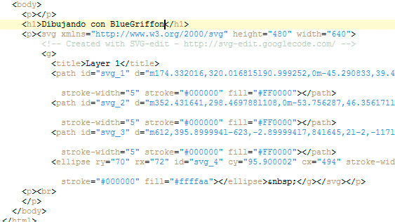

Desde BlueGriffon también podemos diseñar imágenes en formato SVG (abreviatura de Scalable Vector Graphics). Éste es un formato de imágenes vectorial basado en el formato XML. Ésto quiere decir que los archivos en este formato pueden ser modificados con un editor de texto sencillo y que su código se puede visualizar e interpretar con un poco de entrenamiento. Para terminar de añadir ventajas, es un formato abierto desarrollado por el Word Wide Web Consortium, el organismo regulador de HTML5 y de CSS, por lo que su uso es muy recomendable.
No vamos a ver cómo se modifican y se crean los archivos SVG, ya que en BlueGriffon contamos con una interesante herramienta que nos ayudará a crearlos.
Sigamos estos pasos para conseguirlo.
1. Abriremos BlueGriffon con un archivo nuevo.
2. Haremos clic en el icono Editor SVG, recogido en la figura:
3. En la ventana de la figura iremos seleccionando las herramientas de la izquierda y realizando nuestro dibujo. Es un editor de imágenes sencillo, similar a otros de su gama. En la parte superior aparecen diferentes modificadores, dependiendo de la herramienta seleccionada.
4. Si nuestra imagen va a ser complicada, podemos utilizar las capas para distribuir las partes. Se despliega haciendo clic en la parte derecha.
5. Para terminar, en el menú de la esquina superior izquierda seleccionaremos la opción Insertar imagen en BlueGriffon.
Tras ese paso, veremos que la imagen ha pasado a formar parte de la página web. Podríamos volverla a editar en cualquier momento, con tan sólo hacer doble clic sobre ella.
Lo más interesante lo encontramos al hacer clic en el botón source, donde podremos ver qué apariencia toma nuestra imagen. Es una simple etiqueta <svg> seguida de los elementos necesarios.

Nota
Este editor es un complemento muy interesante desde el que podremos disfrutar de muchas opciones, aunque la implementación de este tipo de contenidos en los diferentes navegadores aún no está excesivamente madura, por lo que podemos encontrarnos con errores según el navegador y la complejidad del dibujo.